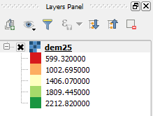

As you can see, the raster is now styled using a more diverse range of color, going from red (low values) to green (high values), passing by yellow.

You may notice two other things:
In the next steps, we will change them.